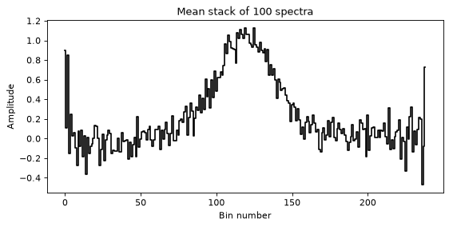
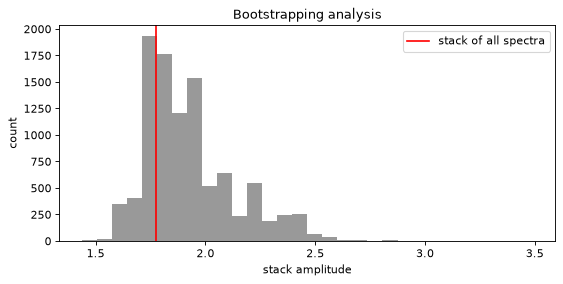
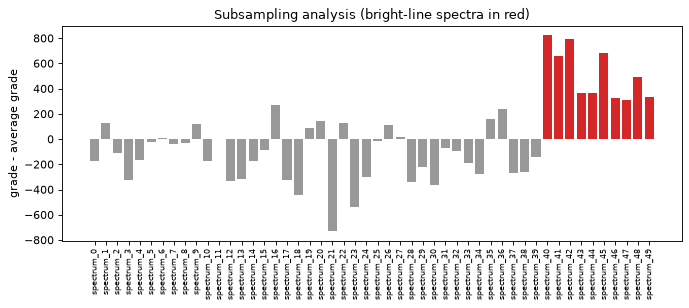
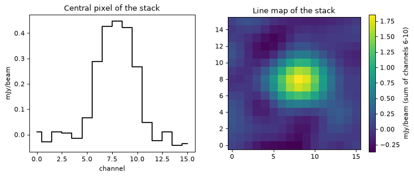
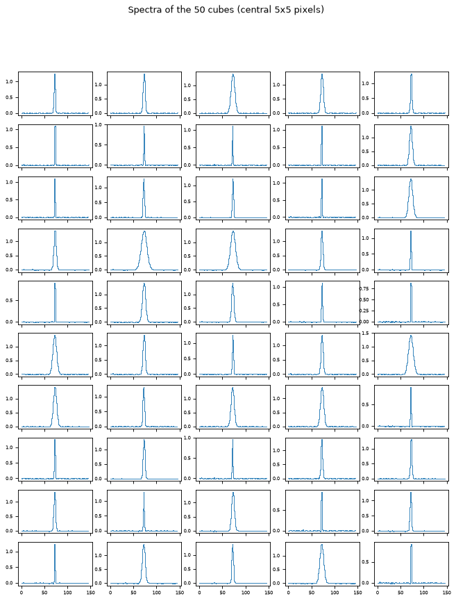
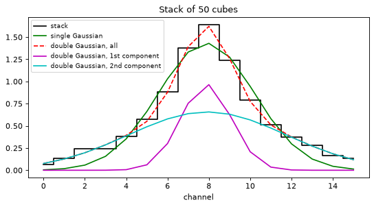
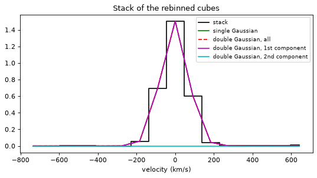
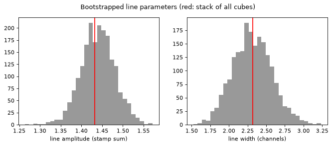
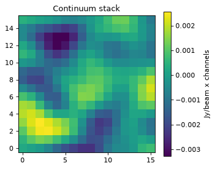
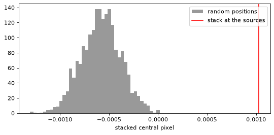

LineStacker examples¶
All LineStacker examples in one notebook, run on the example data shipped with
LineStacker (Example/oneD and Example/cube):
One-dimensional stacking: a basic stack of 100 spectra, then a median stack with bootstrapping and subsampling.
Cube stacking: the basic stack, the same stack from a catalogue and from Python arrays, then the extended example (line fits, spectral rebinning, bootstrapping).
Continuum stacking with the same function, and random-position stacks.
Run it from the Example folder. The example cubes are CASA images, so the
cube sections need CASA’s Python packages (pip install casatools);
FITS cubes would need no CASA. Everything the notebook writes goes to
notebook_outputs/.
Setup¶
import os
import sys
import glob
import numpy as np
import matplotlib.pyplot as plt
# Use the LineStacker of this repository (two folders up) if it is there,
# rather than another installed version.
REPO = os.path.abspath(os.path.join(os.getcwd(), '..', '..'))
if os.path.isfile(os.path.join(REPO, 'LineStacker', '__init__.py')):
sys.path.insert(0, REPO)
import LineStacker
import LineStacker.OneD_Stacker
import LineStacker.image
import LineStacker.analysisTools
import LineStacker.tools.fit as fitTools
print('LineStacker', LineStacker.__version__, 'from', os.path.dirname(LineStacker.__file__))
EXAMPLE = os.getcwd() # this notebook's folder
OUT = os.path.join(EXAMPLE, 'notebook_outputs')
os.makedirs(OUT, exist_ok=True)
N_JOBS = -1 # Monte-Carlo tools: use all CPU cores
FEM = 1897420620253.1646 # [CII] 158 um rest frequency (Hz)
plt.rcParams['figure.dpi'] = 80
LineStacker 2.0.0 from LineStacker
1. One-dimensional stacking¶
1.1 Basic stack¶
100 spectra (oneD/data/spectra_<i>), each with its line centre given as a
velocity (central_velocity_<i>). Every spectrum becomes a
LineStacker.OneD_Stacker.Spectrum; Stack aligns them on their line centre.
Stack returns the stacked spectrum and the number of spectra contributing to
each channel.
data = os.path.join(EXAMPLE, 'oneD', 'data')
spectra = [LineStacker.OneD_Stacker.Spectrum(spectrum=np.loadtxt(os.path.join(data, 'spectra_%d' % i)),
centralVelocity=np.loadtxt(os.path.join(data, 'central_velocity_%d' % i)))
for i in range(100)]
stacked, n_per_channel = LineStacker.OneD_Stacker.Stack(spectra)
fig, ax = plt.subplots(figsize=(8, 3.5))
ax.step(range(len(stacked)), stacked, where='mid', color='k')
ax.set_xlabel('Bin number')
ax.set_ylabel('Amplitude')
ax.set_title('Mean stack of %d spectra' % len(spectra))
plt.show()

1.2 Median stack, bootstrapping and subsampling¶
50 spectra (oneD/dataExtended): 40 have a line of amplitude 1 and 10
(numbers 40 to 49) a line of amplitude 10. Naming the spectra makes the
subsampling results readable.
data = os.path.join(EXAMPLE, 'oneD', 'dataExtended')
names = ['spectrum_%d' % i for i in range(50)]
spectra = [LineStacker.OneD_Stacker.Spectrum(spectrum=np.loadtxt(os.path.join(data, 'spectra_%d' % i)),
centralVelocity=np.loadtxt(os.path.join(data, 'central_velocity_%d' % i)),
name=names[i])
for i in range(50)]
stacked, _ = LineStacker.OneD_Stacker.Stack(spectra, method='median')
stackAmp = np.max(stacked)
print('amplitude of the median stack: %.3f' % stackAmp)
amplitude of the median stack: 1.774
Bootstrapping: stack spectra drawn with replacement many times, here
saving the amplitude of each stack. The original example uses
nRandom=100000; 10 000 is enough to see the distribution and runs in seconds.
seed makes the draws reproducible, and the result does not depend on n_jobs.
bootstrapped = LineStacker.analysisTools.bootstraping_OneD(spectra, save='amp', nRandom=10000,
method='median', seed=1, n_jobs=N_JOBS)
fig, ax = plt.subplots(figsize=(8, 3.5))
ax.hist(bootstrapped, bins=30, color='0.6')
ax.axvline(stackAmp, color='red', label='stack of all spectra')
ax.set_xlabel('stack amplitude')
ax.set_ylabel('count')
ax.set_title('Bootstrapping analysis')
ax.legend()
plt.show()
LineStacker: bootstrapping 50 spectra, 10000 iterations
| | LOADING 100%

The distribution has several peaks: some draws contain more of the bright
spectra than others. Subsampling finds which spectra are responsible: random
subsets are stacked and graded (by default maximizeSNR, the signal to noise of
a Gaussian fit), and every spectrum collects the grades of the subsets it was in.
The bright spectra come out on top already with 10 000 iterations.
grades = LineStacker.analysisTools.subsample_OneD(spectra, nRandom=10000, method='median',
seed=1, n_jobs=N_JOBS)
meanGrade = np.mean(list(grades.values()))
fig, ax = plt.subplots(figsize=(10, 3.5))
ax.bar(range(len(names)), [grades[n] - meanGrade for n in names],
color=['0.6'] * 40 + ['tab:red'] * 10)
ax.set_xticks(range(len(names)))
ax.set_xticklabels(names, rotation='vertical', fontsize=7)
ax.set_ylabel('grade - average grade')
ax.set_title('Subsampling analysis (bright-line spectra in red)')
plt.show()
LineStacker: subsampling 50 spectra, 10000 iterations
| | LOADING 100%

2. Cube stacking¶
2.1 Basic stack from coordinate files¶
The classic input: one coordinate file per cube (<cube>_coord.txt, one line
RA, Dec, z per source), here 30 cubes of the [CII] line. Instead of the file
dialog (LineStacker.readCoordsNamesGUI()) the files are listed with glob.
The redshift gives the line centre, so the rest frequency fEm is needed.
LineStacker prints where it wrote the stacked cube (LineStacker.verbose).
coordNames = sorted(glob.glob(os.path.join(EXAMPLE, 'cube', 'data', '*_coord.txt')))
coords = LineStacker.readCoords(coordNames)
imagenames = [c.removesuffix('_coord.txt') + '.image' for c in coordNames]
stacked = LineStacker.image.stack(coords, imagenames=imagenames, fEm=FEM, stampsize=16, N_chans=16,
outfile=os.path.join(OUT, 'stackResult.fits'))
centralValue, centralSpectrum, stackCube, missing = stacked
LineStacker: read 30 positions from 30 coordinate files
LineStacker: mean line stack of 30 sources (16x16 pixels, 16 channels) written to LineStacker/Example/notebook_outputs/stackResult.fits
stack returns the central pixel at the central channel, the spectrum of the
central pixel, the stacked cube (axes x, y, Stokes, channel) and how many
sources miss each channel (sources whose cube does not cover it).
line = slice(6, 11) # channels around the line
fig, axes = plt.subplots(1, 2, figsize=(10, 3.8))
axes[0].step(range(16), centralSpectrum * 1e3, where='mid', color='k')
axes[0].set_xlabel('channel')
axes[0].set_ylabel('mJy/beam')
axes[0].set_title('Central pixel of the stack')
im = axes[1].imshow(stackCube[:, :, 0, line].sum(axis=2).T * 1e3, origin='lower')
fig.colorbar(im, ax=axes[1], label='mJy/beam (sum of channels 6-10)')
axes[1].set_title('Line map of the stack')
plt.show()

2.2 The same stack from a catalogue¶
One table for the whole sample, one row per source, with the cube of each
source named in an image column. readCatalog reads CSV, ECSV, FITS tables,
VOTable (anything astropy.table reads), an astropy Table or a pandas
DataFrame. Positions can be in degrees or sexagesimal (RA in hours,
CASA’s -027.40.59.866 included). Relative cube names are looked up next to
the catalogue first.
Here the catalogue is written from the coordinate files above, with cube names relative to the catalogue; normally it comes from your own catalogue (TOPCAT, a database query…).
catalog = os.path.join(OUT, 'basic_catalog.csv')
with open(catalog, 'w') as fh:
fh.write('ra,dec,z,image\n')
for c in coords:
cube = c.image.removesuffix('.fits') + '.image'
fh.write('%.8f,%.8f,%.10f,%s\n' % (c.ra.deg, c.dec.deg, c.z, os.path.relpath(cube, OUT)))
print(''.join(open(catalog).readlines()[:4]) + '...')
ra,dec,z,image
52.76729167,-27.68329611,7.2657160664,../cube/data/basicExampleCube_10071.image
52.81320833,-27.57057417,7.2219053565,../cube/data/basicExampleCube_14115.image
52.64495833,-27.75960167,7.2261167585,../cube/data/basicExampleCube_16612.image
...
coordsCat = LineStacker.readCatalog(catalog)
stackedCat = LineStacker.image.stack(coordsCat, fEm=FEM, stampsize=16, N_chans=16, outfile=None) # no imagenames needed
print('same stack as from the coordinate files:', np.allclose(stackedCat[2], stackCube, rtol=1e-6, atol=1e-9))
LineStacker: read 30 positions in 30 cubes from basic_catalog.csv
LineStacker: mean line stack of 30 sources (16x16 pixels, 16 channels) done (outfile=None: not written to disk)
same stack as from the coordinate files: True
Columns can have other names: readCatalog(cat, ra='RAJ2000', dec='DEJ2000', z='zspec', image='cube')
(common names such as RAJ2000, redshift, cube are found automatically). An
optional weight column gives weights for mean stacks. Without a z column the
positions are for continuum stacking. Without an image column, all sources
must lie in the single cube given as imagenames; LineStacker never guesses
which cube a source belongs to.
2.3 The same stack from Python arrays¶
makeCoords builds the coordinates from lists, numpy arrays, astropy
quantities or a SkyCoord; image can be one cube for all sources or one per
source.
ra = np.array([c.ra.deg for c in coords]) # e.g. columns of your own catalogue
dec = np.array([c.dec.deg for c in coords])
z = np.array([c.z for c in coords])
coordsArr = LineStacker.makeCoords(ra, dec, z=z, image=imagenames)
stackedArr = LineStacker.image.stack(coordsArr, fEm=FEM, stampsize=16, N_chans=16, outfile=None)
print('same stack:', np.allclose(stackedArr[2], stackCube, rtol=1e-6, atol=1e-9))
LineStacker: made 30 coordinates
LineStacker: mean line stack of 30 sources (16x16 pixels, 16 channels) done (outfile=None: not written to disk)
same stack: True
2.4 Extended example: line profiles, rebinning and bootstrapping¶
50 cubes (cube/dataExtended) whose lines have different widths. First the
stack, and the spectrum of each cube (central 5x5 pixels, read with
LineStacker.image.readCube, which reads FITS files and CASA images alike).
coordNames = sorted(glob.glob(os.path.join(EXAMPLE, 'cube', 'dataExtended', '*_coord.txt')))
coords = LineStacker.readCoords(coordNames)
imagenames = [c.removesuffix('_coord.txt') + '.image' for c in coordNames]
stacked = LineStacker.image.stack(coords, imagenames=imagenames, fEm=FEM, N_chans=16, stampsize=16,
outfile=os.path.join(OUT, 'stackResult_extended.fits'))
fig, axes = plt.subplots(10, 5, figsize=(10, 12), sharex=True)
for ax, name in zip(axes.ravel(), imagenames):
pix = LineStacker.image.readCube(name)
c = pix.shape[0] // 2
ax.step(range(pix.shape[3]), pix[c - 2:c + 3, c - 2:c + 3, :, :].sum(axis=(0, 1, 2)), where='mid', lw=0.8)
ax.tick_params(labelsize=6)
fig.suptitle('Spectra of the 50 cubes (central 5x5 pixels)')
plt.show()
LineStacker: read 50 positions from 50 coordinate files
LineStacker: mean line stack of 50 sources (16x16 pixels, 16 channels) written to LineStacker/Example/notebook_outputs/stackResult_extended.fits

The spectrum of the stack, summed over the stamp, fitted with one and with two Gaussians. The narrow core plus broad wings come from stacking lines of different widths.
import warnings
from scipy.optimize import OptimizeWarning
def plot_fits(spectrum, x, title, xlabel):
with warnings.catch_warnings():
# a double Gaussian is degenerate for a single-component line
warnings.simplefilter('ignore', OptimizeWarning)
single = fitTools.GaussFit(fctToFit=spectrum)
double = fitTools.DoubleGaussFit(fctToFit=spectrum, returnAllComp=True)
fig, ax = plt.subplots(figsize=(8, 3.8))
ax.step(x, spectrum, 'k', where='mid', label='stack')
ax.plot(x, single, 'g', label='single Gaussian')
ax.plot(x, double[0], 'r--', label='double Gaussian, all')
ax.plot(x, double[1], 'm', label='double Gaussian, 1st component')
ax.plot(x, double[2], 'c', label='double Gaussian, 2nd component')
ax.set_xlabel(xlabel)
ax.set_title(title)
ax.legend(fontsize=8)
plt.show()
integrated = stacked[2].sum(axis=(0, 1, 2))
plot_fits(integrated, range(len(integrated)), 'Stack of 50 cubes', 'channel')

Spectral rebinning: each cube is resampled so that all lines get the width
of the narrowest one (the widths come from Gaussian fits of each cube’s
spectrum). The rebinned cubes are written to notebook_outputs/rebinned, then
stacked; the stacked line is now a single Gaussian. The velocity axis comes
from the header of the stacked cube.
rebinned = LineStacker.analysisTools.rebin_CubesSpectra(coords, imagenames, outdir=os.path.join(OUT, 'rebinned'))
outfile = os.path.join(OUT, 'stackResult_rebinned.fits')
rebinnedStack = LineStacker.image.stack(coords, imagenames=rebinned, fEm=FEM, N_chans=16, stampsize=16,
outfile=outfile)
from astropy.io import fits
h = fits.getheader(outfile)
channels = np.arange(h['NAXIS3'])
freq = h['CRVAL3'] + (channels + 1 - h['CRPIX3']) * h['CDELT3']
velocity = 299792.458 * (h['RESTFRQ'] - freq) / h['RESTFRQ'] # radio convention, km/s
plot_fits(rebinnedStack[2].sum(axis=(0, 1, 2)), velocity, 'Stack of the rebinned cubes', 'velocity (km/s)')
LineStacker: rebinning 50 cubes to the narrowest line width
| | LOADING 100%
LineStacker: 50 rebinned cubes written: in LineStacker/Example/notebook_outputs/rebinned (extendedExampleCube_10619_SpectralRebinned.image ... extendedExampleCube_97379_SpectralRebinned.image)
LineStacker: mean line stack of 50 sources (16x16 pixels, 16 channels) written to LineStacker/Example/notebook_outputs/stackResult_rebinned.fits

Bootstrapping the cube stack, saving the amplitude and width of a Gaussian fit of each bootstrapped stack (fits are spread over all cores).
boot = LineStacker.analysisTools.bootStraping_Cube(coords, imagenames=imagenames, fEm=FEM, N_chans=16,
stampsize=16, nRandom=2000, save='ampAndWidth',
seed=1, n_jobs=N_JOBS)
amp, width = np.array(boot[1:], dtype=float).T
fig, axes = plt.subplots(1, 2, figsize=(10, 3.5))
axes[0].hist(amp, bins=30, color='0.6')
axes[0].axvline(boot[0][0], color='red')
axes[0].set_xlabel('line amplitude (stamp sum)')
axes[1].hist(np.abs(width), bins=30, color='0.6')
axes[1].axvline(abs(boot[0][1]), color='red')
axes[1].set_xlabel('line width (channels)')
fig.suptitle('Bootstrapped line parameters (red: stack of all cubes)')
plt.show()
print('amplitude %.4f +- %.4f, width %.2f +- %.2f channels' % (boot[0][0], np.nanstd(amp), abs(boot[0][1]), np.nanstd(np.abs(width))))
LineStacker: bootstrapping 50 sources, 2000 iterations
| | LOADING 100%
amplitude 1.4317 +- 0.0407, width 2.32 +- 0.26 channels

3. Continuum stacking¶
The same stack function, with continuum=True. The example cubes have a
spectral axis, so LineStacker warns and stacks the images summed over channels
(collapse='sum', the default; 'mean' and 'median' are possible), made in
memory. Images without a spectral axis are stacked as continuum automatically,
without warning.
coordNames = sorted(glob.glob(os.path.join(EXAMPLE, 'cube', 'data', '*_coord.txt')))
coords = LineStacker.readCoords(coordNames)
imagenames = [c.removesuffix('_coord.txt') + '.image' for c in coordNames]
continuum = LineStacker.image.stack(coords, imagenames=imagenames, stampsize=16, continuum=True,
outfile=os.path.join(OUT, 'continuumStack.fits'))
fig, ax = plt.subplots(figsize=(4.5, 3.8))
im = ax.imshow(continuum[2][:, :, 0, 0].T, origin='lower')
fig.colorbar(im, ax=ax, label='Jy/beam x channels')
ax.set_title('Continuum stack')
plt.show()
LineStacker: read 30 positions from 30 coordinate files
LineStacker: mean continuum stack of 30 sources (16x16 pixels) written to LineStacker/Example/notebook_outputs/continuumStack.fits
<cell>:5: UserWarning: continuum stacking (continuum=True): collapsing 30 cube(s) with a spectral axis (sum over channels) in memory
continuum = LineStacker.image.stack(coords, imagenames=imagenames, stampsize=16, continuum=True,

Stacks at random positions tell how significant the stacked value is: each source is moved to a random position (here 4 to 9 microradians, about 0.8” to 1.9”, away; the example cubes are only 6” wide) and the stack is repeated.
random = LineStacker.analysisTools.stack_estimator(coords, imagenames=imagenames, continuum=True, nRandom=2000,
lowerLimit=4e-6, upperLimit=9e-6, seed=1, n_jobs=N_JOBS)
std, mean, dist = random
fig, ax = plt.subplots(figsize=(8, 3.5))
ax.hist(np.ravel(dist), bins=40, color='0.6', label='random positions')
ax.axvline(continuum[0], color='red', label='stack at the sources')
ax.set_xlabel('stacked central pixel')
ax.legend()
plt.show()
print('stack %.3g, random positions %.3g +- %.3g' % (continuum[0], mean, std))
LineStacker: stacking 2000 sets of random positions around 30 sources
| | LOADING 25%
| | LOADING 100%
stack 0.00103, random positions -0.000582 +- 0.000201
<cell>:1: UserWarning: continuum stacking (continuum=True): collapsing 30 cube(s) with a spectral axis (sum over channels) in memory
random = LineStacker.analysisTools.stack_estimator(coords, imagenames=imagenames, continuum=True, nRandom=2000,

The random positions give negative values on average: they fall in the negative sidelobes of the dirty beam around each source, as the example cubes are small. On real data, use limits of several beams (the default, 5 to 10 beams).
4. Good to know¶
LineStacker.verbose = Falsesilences LineStacker’s messages and progress bars; any function also takesverbose=True/False.outfilenames ending in.fitsare written as FITS, other names (e.g.stackResult.image) as CASA images.The Monte-Carlo tools take
n_jobs(cores, -1 for all) andseed; results do not depend onn_jobs.